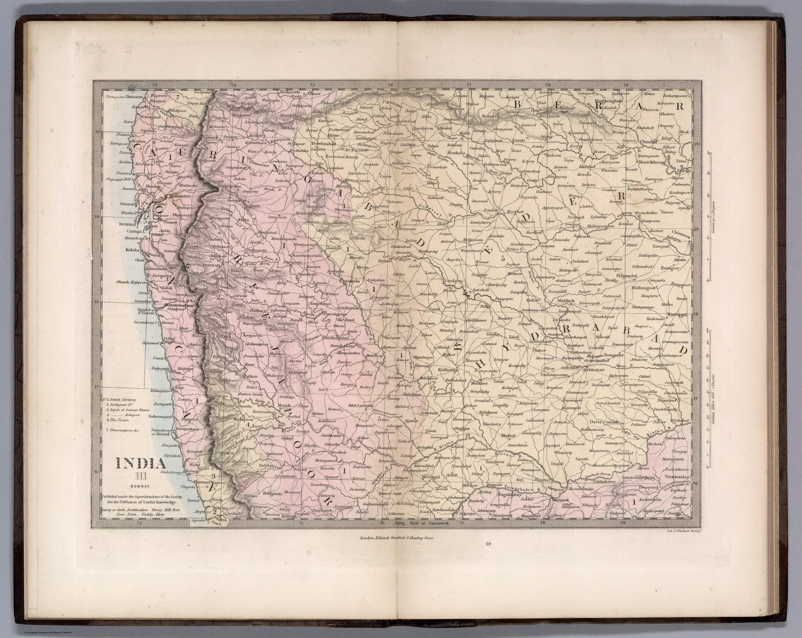

← Home Ground: Bombay and the Deccan

India III: Bombay
The revised atlas
The Society for the Diffusion of Useful Knowledge had issued regional maps of India as part of its programme of inexpensive education. John Walker revised the series, and J. & C. Walker engraved the sheets sold by Edward Stanford in the 1856 atlas. The date therefore identifies this revised issue, not necessarily the first appearance of every underlying plate.
A presidency at regional scale
The map isolates Bombay as one numbered component of a larger sheet system. Administrative boundaries, settlements, routes and hachured relief present the presidency without the ornament of the Tallis maps or the scale of a military case map.
Useful knowledge and empire
The SDUK’s educational mission was liberal and public-minded, but the knowledge it diffused was also the geography of British rule. Breaking India into numbered regional sheets naturalised the presidency and province as the basic units through which the country was to be known.
The gaze
The number in the title, III, is the most telling thing on the sheet. Bombay was to be learned as one of a set, in the order the atlas fixed, by readers who would never need a road through the Ghats. Stanford’s cheap issue, the Society’s name and the Walkers’ engraving together made the presidency a unit of schoolroom geography.
In the Deccan timeline
The Hyderabad Residency (1803–1820s) · Pune under the Company (1818–1830s) · Jagirs and saranjams under the Company (1830s–1860s) · The Bombay revenue survey (1835–1847) · Jotirao Phule (1848–1873) · The Inam Commission (1852–1863) · The railway climbs the ghats (1853–1863) · The cotton boom and bust (1861–1865) · The Watan Act (1874, in force 5 February 1875) · The Deccan Riots (May–June 1875) · Coda: the Deccan as the Company saw it (1827–1893)